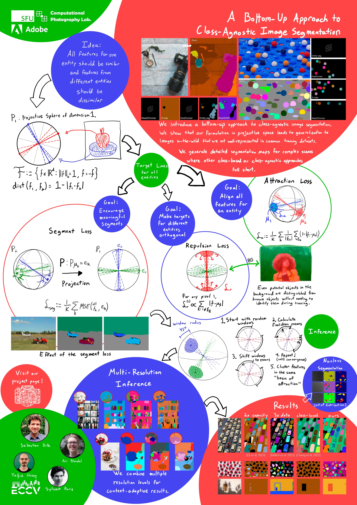

A Bottom-Up Approach to Class-Agnostic Image Segmentation
 |  |  |  |
| Sebastian Dille | Ari Blondal | Sylvain Paris | Yağız Aksoy |

We introduce a bottom-up approach to class-agnostic image segmentation. We show that our formulation leads to generalization to images in-the-wild that are not well-represented in common training datasets. We generate detailed segmentation maps for complex scenes where other class-based or class-agnostic approaches fall short.
Abstract
Class-agnostic image segmentation is a crucial component in automating image editing workflows, especially in contexts where object selection traditionally involves interactive tools. Existing methods in the literature often adhere to top-down formulations, following the paradigm of class-based approaches, where object detection precedes per-object segmentation. In this work, we present a novel bottom-up formulation for addressing the class-agnostic segmentation problem. We supervise our network directly on the projective sphere of its feature space, employing losses inspired by metric learning literature as well as losses defined in a novel segmentation-space representation. The segmentation results are obtained through a straightforward mean-shift clustering of the estimated features. Our bottom-up formulation exhibits exceptional generalization capability, even when trained on datasets designed for class-based segmentation. We further showcase the effectiveness of our generic approach by addressing the challenging task of cell and nucleus segmentation. We believe that our bottom-up formulation will offer valuable insights into diverse segmentation challenges in the literature.
Paper
 |
 |
Poster
|  |
BibTeX
author={Sebastian Dille and Ari Blondal and Sylvain Paris and Ya\u{g}{\i}z Aksoy},
title={A Bottom-Up Approach to Class-Agnostic Image Segmentation},
booktitle={Proc. ECCV Workshop},
year={2024},
}